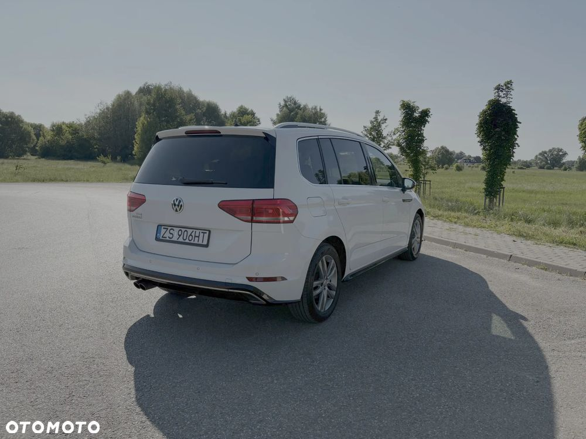
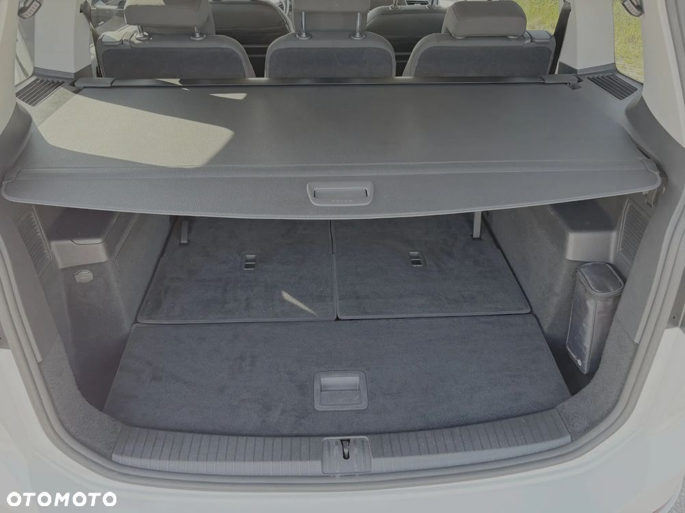
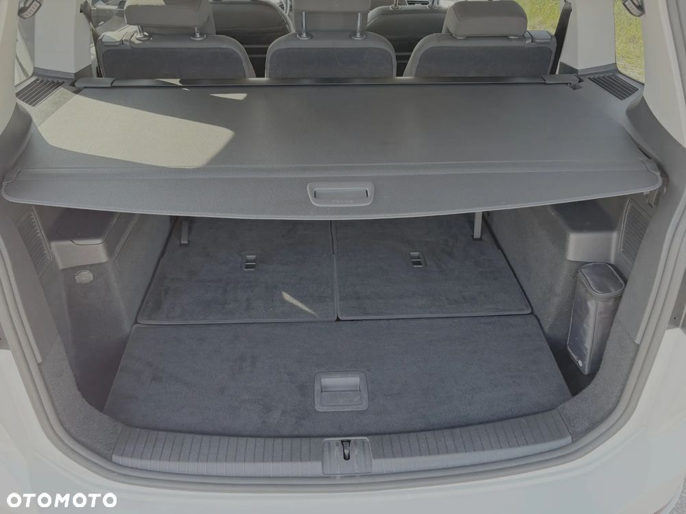

Volkswagen Touran 1.4 TSI BMT Highline DSG
74000 PLN
Warszawa (Mazowieckie)
155 000 km
Idealny samochód rodzinny – 7-osobowy VW Touran Highline z automatyczną skrzynią DSG!
Auto zakupione w Polsce. Pierwszy właściciel. Ekonomiczne. Bardzo komfortowe i przestronne – pomieści całą rodzinę oraz wszystkie bagaże dzięki ogromnemu bagażnikowi.
Wersja Highline oferuje wyjątkowo bogate wyposażenie: nawigacja, tempomat, klimatyzacja 3-strefowa, podgrzewane fotele, LED-y, elektryczne zamykanie i otwieranie bagażnika i wiele więcej!
Auto zadbane, gotowe do jazdy.
Zewnętrzne:
- pakiet stylistyczny R-Line Exterieur
- obręcze aluminiowe Salvador R 17
- lakier metaliczny Pure
- reflektory LED Top:
- światła mijania i drogowe w technologii LED
- światła do jazdy dziennej w technologii LED
- dynamiczna regulacja zasięgu reflektorów
- dynamiczne doświetlanie zakrętów
- obudowy lusterek zewnętrznych i klamki lakierowane w kolorze nadwozia
- podgrzewana szyba przednia
- szyby termoizolujące
- szyba tylna i boczne przyciemniane
- relingi dachowe srebrne
- lusterka podgrzewane, sterowane elektrycznie
Wnętrze:
- tapicerka typu alcantara (Art Velorus)
- nadwozie 7 miejscowe (2+3+2) dodatkowe, składane dwa fotele ukryte w podłodze bagażnika
- fotel kierowcy Top Komfort z funkcją masażu i regulacją w 14 kierunkach
- przednie fotele podgrzewane
- kierownica trójramienna multifunkcyjna, obszyta skórą z funkcją Tiptronic (możliwość sterowania radiem i telefonem)
- łopatki do zmiany biegów przy kierownicy
- dźwignia zmiany biegów obszyta skórą
- oświetlenie Led Ambiente – listwy w drzwiach i przestrzeni pod nogami
- roleta bagażnika z wygodną funkcją zwijania i rozwijania
- składane stoliki
- szuflada pod siedzeniem kierowcy
- klimatyzowany schowek
- Gniazdo USB
- Gniazdo zasilające 12 V x 3 (przód, tył i bagażnik)
- Bezpieczeństwo:
- hamulec postojowy z funkcją Auto – Hold
- ESP – elektroniczny system kontroli trakcji (wraz z ABS, EDS i ASR, asystent siły hamowania)
- Isofix – 5 siedzeń (2 i 3 rząd)
- 7 poduszek powietrznych
- funkcja dezaktywacji poduszki powietrznej pasażera
- aktywna pokrywa silnika
- Autoalarm z niezależnym zasilaniem, funkcją dozoru wnętrza i czujnikiem przechyłu
- immobilizer
- sygnalizacja spadku poziomu ciśnienia w oponach
- system wykrywania zmęczenia kierowcy
Elektryczne i funkcje
- System nawigacji satelitarnej Discover Media:
- obsługa za pośrednictwem 8 calowego, kolorowego i pełni dotykowego ekranu z czujnikiem zbliżeniowym
- radio z odtwarzaczem CD, MP3, FLAC, WMA oraz zewnętrznym gniazdem AUX-IN i USB obsługującym iPod/iPhone
- czytnik kart SD x 2
- 8 głośników
- instalacja telefoniczna (Bluetooth)
- mapa Europy (z usługą bezpłatnej aktualizacji)
- elektryczne zamykanie i otwieranie pokrywy bagażnika
- funkcja Start - Stop
- klimatyzacja 3 strefowa z filtrem alergenowym
- lusterko wsteczne automatycznie przyciemniane
- aktywny tempomat ACC z automatyczną funkcją regulacji odległości Front Assist
- system Front Assist z funkcją awaryjnego hamowania
- czujnik deszczu
- czujnik zmierzchu – automatyczne włączanie świateł z funkcją coming/ Leaving Home
- wybór profilu jazdy: Comfort, Sport, Eco, Individual
 
